Telecom Brasil: Vivo e TIM
Update pós 3Q26
Histórico das planilhas de RI e da CVM; estimativas dos modelos de Vivo e TIM de 24/11/2026; casas: Itaú BBA, BBI, BTG, Santander e UBS.
ABERTURA · O SETOR CONTRA A INFLAÇÃO E O PIB NOMINAL
Serviço móvel cresceu 4,4% ao ano desde 2009, contra IPCA de 5,7% e PIB nominal de 8,7%; superou a inflação só em 2010-12 e 2022-25 e o PIB em nenhum período
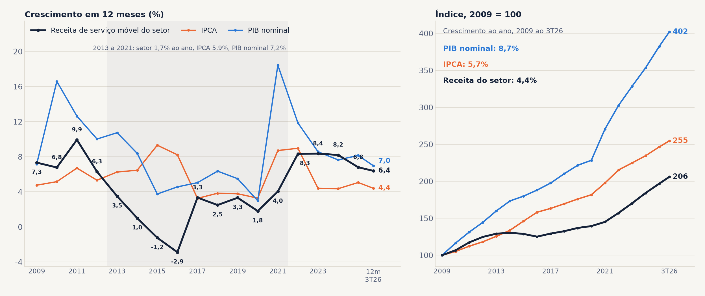
Fonte: RI das companhias, América Móvil (Claro) e releases da Oi na CVM; IBGE (IPCA, média do índice em 12 meses); Banco Central (PIB nominal em 12 meses, série 4382). Serviço móvel de Vivo, TIM, Claro e Oi somado em 12 meses, com a Oi dos dois lados em 2022.
Mesma base dos slides 1 a 3 do deck Móvel Brasil. Receita de serviço móvel das quatro operadoras em 12 meses: 46,3 bi em 2009, 57,8 bi em 2012, 57,9 bi em 2016, 67,2 bi em 2021, 91,1 bi em 2025 e 95,4 bi nos 12 meses até o 3T26. Ao ano, por período (cada período vai do fim do ano anterior ao fim do último ano): 2010-12, 7,7% contra IPCA de 5,7% e PIB nominal de 13,0%; 2013-16, 0,1% contra 7,6% e 6,8%; 2017-21, 3,0% contra 4,6% e 7,5%; 2022-25, 7,9% contra 5,7% e 9,0%; 12 meses até o 3T26, 6,4% contra 4,4% e 7,0%. Ano a ano, acima do IPCA de 2009 a 2012 e de 2023 em diante; acima do PIB nominal só em 2009 e 2024. De 2016 para 2017 o crescimento vai de -2,9% para 3,3%: TIM de -5,1% para 5,2% e Claro de -8,6% para 3,1% na média dos trimestres, com a Vivo em 3,0% e 4,3%; as linhas caem 9,1% em 2016 e 4,9% em 2017, e a receita por linha sobe 6,9% e 8,6%. O crescimento de 2022 em diante inclui o corte do ICMS de julho de 2022, que somou de 6% a 7% à receita líquida. A partir do 2T22 a receita da Oi está dentro das três compradoras.
ABERTURA · VIVO E TIM: QUANTO DO CRESCIMENTO É TRIBUTO MENOR
Tributo menor somou 1 ponto ao ano à receita líquida de Vivo e TIM de 2012 a 2025, cerca de metade pela LC 194; de 2024 em diante o ganho é quase zero
Fonte: RI de Vivo e TIM e CVM (ITR e DFP). Tributos = 1 menos a receita líquida sobre a receita bruta da DVA, já depois de descontos. Ganho = crescimento da receita líquida menos o da receita cobrada. Eventos estaduais pela compilação da Teleco; SP e RJ conferidos na lei.
De 2012 a 2025, empresa inteira: na Vivo a receita cobrada do cliente cresce 4,3% ao ano e a receita líquida 5,3%; na TIM, 2,3% e 3,2%. A diferença, 1,0 ponto ao ano nas duas, é o tributo que caiu de 26,4% para 16,1% da receita cobrada na Vivo e de 24,6% para 12,8% na TIM. Em receita líquida o ganho acumulado é de 14,0% na Vivo e 15,6% na TIM; o degrau da LC 194, do 2T22 ao 1T23, responde por 7,1% e 6,0%, e o resto (6,5% e 9,1%) vem aos poucos, fora das mudanças de lei. Ganho por ano, em pontos: Vivo 2,7 em 2018, 1,6 em 2019, 4,8 em 2022, 3,0 em 2023, 0,7 em 2024, 0,2 em 2025 e zero nos nove meses de 2026; TIM 4,2 em 2017, 1,6 em 2019, 1,7 em 2020, 4,9 em 2022, 5,0 em 2023, -0,4 em 2024, 0,5 em 2025 e 0,2 nos nove meses de 2026. Na receita de serviço móvel, tirando a Oi e o ganho de tributo: Vivo de 5,3% para 3,9% ao ano e TIM de 3,9% para 2,0%. O fator de tributo é da empresa inteira (móvel, fixo e aparelhos) aplicado à receita móvel; em 2012 e 2015 a receita da Vivo inclui a incorporação da Vivo Participações e a compra da GVT, que não mudam a diferença entre líquida e cobrada. Serviços de valor adicionado (aplicativos, leitura digital, vídeo) entram na fatura fora da base do ICMS, com ISS e PIS/Cofins; é contexto, não medida: as empresas não abrem o tributo por serviço. Sinal do tamanho: as autuações estaduais contra a TIM que alegam, entre outros pontos, a não inclusão de SVA na base do ICMS somam R$ 2,6 bi em setembro de 2026, contra R$ 2,2 bi em dezembro de 2025 e R$ 0,2 bi em 2020 (notas de contingências das demonstrações). Tributos sobre a receita cobrada (CVM, empresa inteira: móvel, fixo e aparelhos): Vivo 26,4% no 1T11, 28,4% no 1T17, 21,7% no 2T22, 16,2% no 1T23, 17,4% no 2T23 e 16,1% no 3T26; TIM 24,6% no 1T11, 27,5% no 1T16, 18,9% no 2T22, 14,0% no 1T23 e 12,8% no 3T26. Linha do tempo: em 2016 cerca de 12 estados subiram o ICMS de telecom (RS de 25% para 30%, MG de 25% para 27%, DF de 25% para 28%); RJ de 26% para 28% no fim de 2016; SP ficou em 25% de 1991 a 2022. Em julho de 2017 a Vivo deixa de incluir o ICMS na base do PIS/Cofins. Em novembro de 2021 o STF decide que telecom não pode pagar acima da alíquota geral, com efeito a partir de 2024; a Lei Complementar 194, de 23/06/2022, antecipa o corte (SP de 25% para 18%). Em 2023 cerca de 15 estados sobem a alíquota geral, e em 2024 RJ (20% mais o fundo de combate à pobreza), BA, CE e DF. A lista por estado vem da compilação da Teleco, consultoria do setor; só SP e RJ foram conferidos na lei. A TIM chega a 2011 pela TIM Participações (até o 2T20) e depois pela TIM S.A.; nos trimestres sem consolidado, demonstração individual. Mesma base dos slides sem a Oi e sem o ICMS do deck Móvel Brasil (planilha crescimento_real_movel_oi_icms) e do gráfico de deduções da Vivo de 17/11/2026. Receita da Oi por trimestre cheio: 466 mi na Vivo e 607 mi na TIM no 3T22 (6,0% e 11,8% da receita de serviço móvel). Receita líquida sobre bruta: Vivo de 0,783 para 0,838 e TIM de 0,811 para 0,860 depois do corte, o que soma 7,1% e 6,0% à receita líquida; na TIM o ajuste segue até o 4T23. Vivo, crescimento no ano: 2022, 12,1% reportado, 7,2% sem a Oi e 2,5% sem a Oi e sem o ICMS; 2023, 10,8%, 9,0% e 6,2%; 2024, 8,4% e 7,8% sem o ICMS; 2025, 6,6% e 6,3%; nove meses de 2026, 6,9%. TIM: 2022, 20,2%, 10,1% e 5,7%; 2023, 11,1%, 7,0% e 2,2%; 2024, 6,6% e 7,0%; 2025, 5,4% e 4,9%; nove meses de 2026, 4,7% e 4,6%. No pico: Vivo no 1T23, 15,9% reportado, 8,9% sem a Oi e 1,6% sem os dois; TIM no 3T22, 25,8%, 11,0% e 6,0%. Não separado: o reajuste de preço da base recebida da Oi e a reposição atrasada da inflação, que ficam dentro do crescimento limpo de 2023 e 2024.
ABERTURA · BASE E PORTABILIDADE: A TIM PERDE PARTICIPAÇÃO
A TIM é doadora de participação: perdeu 1,7 milhão de linhas em 12 meses (-3,0%) com o setor a +2,3%, e a fatia caiu de 25,7% para 24,4%
Fonte: Anatel (linhas de pessoas, pós e pré, sem M2M e maquininhas, até set/26; portabilidade numérica móvel até o 3T26). Menores: demais prestadoras. Claro inclui a NuCel. Setor: soma das quatro.
Base em set/26 (Anatel, linhas de pessoas), em milhões, com a variação em 12 meses: Vivo 86,0 (+1,7 milhão, +2,0%), Claro 75,6 (+3,3 milhões, +4,5%), TIM 54,0 (-1,7 milhão, -3,0%), menores 5,7 (+1,6 milhão, +38,8%) e setor 221,3 (+4,9 milhões, +2,3%). Fatia das linhas de pessoas: TIM de 25,7% para 24,4% em 12 meses (era 26,7% em set/23); Vivo de 39,0% para 38,9%; Claro de 33,4% para 34,2%; menores de 1,9% para 2,6%. A TIM é a única das três com mais pré do que pós (27,6 contra 26,4 milhões). Por segmento, em 12 meses: pós da TIM +4,1% contra +7,8% do setor (Vivo +6,2%, Claro +9,5%, menores +49,9%); pré da TIM -9,0% contra -4,7% do setor (Vivo -4,5%, Claro -1,9%). No pós a fatia da TIM vai de 21,1% para 20,4%; a da Vivo, de 42,7% para 42,0%. Portabilidade: a TIM perde 408 mil linhas no 3T26, o dobro das 205 mil do 1T24, e 1,6 milhão em 12 meses, 2,9% da base de pessoas dela; não tem saldo positivo desde 2017. Em 12 meses, saldo contra a TIM: Claro 856 mil, Vivo 526 mil e menores 241 mil; nos 12 meses até set/24 eram 446 mil, 349 mil e 112 mil. Em bruto, a TIM perdeu 1.381 mil para a Claro, 862 mil para a Vivo e 279 mil para as menores, e recebeu 525 mil, 337 mil e 39 mil. A perda de linhas da TIM em 12 meses (1,7 milhão) é quase igual ao saldo de portabilidade (1,6 milhão). Leitura para a tese: com a base encolhendo 3% e o ARPU de pós parado (R$ 55,4, -0,3% em um ano), a receita de pós da TIM desacelerou de 13,9% no 1T25 para 4,1% no 3T26, contra 7,7% na Vivo. Contraponto: a receita de serviço móvel da TIM ainda cresce 4,0% e a margem EBITDA sobe; o slide mostra perda de base e de participação, não queda de receita. O crescimento total em 12 meses de Vivo e Claro oscila em 2025 por limpezas de linhas de pré. ARPU, receita por segmento e a penetração da PNAD saíram deste slide e estão na versão anterior do gerador.
1 · RECEITA: CONTRA A INFLAÇÃO E O PIB, E CONTRA AS CASAS
A receita do modelo cresce menos que a inflação e o PIB nominal de 2027E em diante e, ainda assim, fica até 1,3 ponto acima das casas
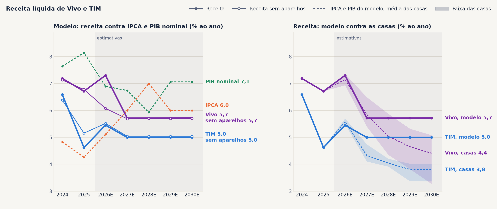
Fonte: RI e modelos de Vivo e TIM de 24/11/2026; Banco Central (IPCA e PIB realizados). PIB nominal do modelo = PIB real de 1,7%, 0,7%, -1,0% e 1,0% daí em diante, com o IPCA do modelo. Casas: Itaú BBA, BBI, BTG, Santander e, na Vivo, UBS.
Premissas do modelo. IPCA: 5,1% em 2026E, 6,0% em 2027E, 7,0% em 2028E e 6,0% em 2029E e 2030E (DRE do modelo). PIB real: 1,7% em 2026E, 0,7% em 2027E, -1,0% em 2028E e 1,0% de 2029E em diante (premissa informada em 24/11/2026; ainda não está nas planilhas). PIB nominal resultante: 6,9%, 6,7%, 5,9%, 7,1% e 7,1%. Mercado. Focus de 19/11/2026, medianas: IPCA de 5,2%, 5,1%, 4,0%, 4,0% e 4,0%, com respostas entre 3,0% e 6,0% de 2028 em diante; PIB real de 1,7%, 1,0%, 1,7%, 2,0% e 2,0%; PIB nominal de 6,9%, 6,2%, 5,8%, 6,1% e 6,0%, calculado com o IPCA como deflator. O IPCA de 7,0% do modelo em 2028E fica acima da resposta mais alta do Focus. Receita líquida. Vivo no modelo: 7,3% em 2026E e 5,7% de 2027E a 2030E, contra a média das casas de 7,2%, 5,9%, 5,0%, 4,7% e 4,4% (faixa de 3,3% a 5,1% em 2030E). TIM no modelo, com a receita líquida travada em 5,0% ao ano de 2027E em diante (a receita móvel fecha a conta, com 4,6% em 2027E, 4,7% em 2028E, 4,8% em 2029E e perto de 5,0% de 2030E em diante): 5,5%, 5,0%, 5,0%, 5,0% e 5,0%, contra 5,6%, 4,3%, 4,0%, 3,8% e 3,8% nas casas (faixa de 3,4% a 4,0% em 2030E); o modelo fica 0,7 a 1,2 ponto acima da média e 1,0 ponto acima da casa mais alta em 2030E. Receita sem aparelhos (receita líquida menos receita de aparelhos, calculada fora dos modelos; confere com a linha de receita de serviços): Vivo 7,1% em 2024, 6,8% em 2025, 6,1% em 2026E e 5,7% de 2027E em diante, contra 7,3% da receita total em 2026E, quando os aparelhos crescem 24,6%; TIM 6,4%, 5,2%, 5,5% e 5,0% de 2027E em diante, com a diferença maior em 2025, quando os aparelhos caem 10,6%. Em termos reais, com a inflação de cada um: a receita da Vivo no modelo cai 0,3% em 2027E, 1,2% em 2028E e 0,3% em 2029E e 2030E, e nas casas cresce 0,7%, 1,0%, 0,6% e 0,4%; a da TIM no modelo cai 0,9%, 1,9%, 0,9% e 0,9%, e nas casas fica entre -0,7% e zero. Contra o PIB nominal, a receita cresce menos nos dois: Vivo 1,3 ponto abaixo em 2030E no modelo e 1,6 no mercado; TIM 2,1 e 2,2 pontos abaixo. Realizado: IPCA de dezembro contra dezembro e PIB nominal em 12 meses (séries 433 e 4382 do Banco Central); o slide 2 usa o IPCA pela média do ano. O pico da receita em 2022 e 2023 inclui os clientes da Oi e o corte do ICMS.
2 · MARGEM EBITDA EM 12 MESES: MODELO, COMPANHIA E CASAS
Margem EBITDA desde 2020: a Oi viria com 70% de margem e 2023 ficou abaixo dessa conta; sem venda de ativos, a Vivo fica 1,6 ponto abaixo do publicado
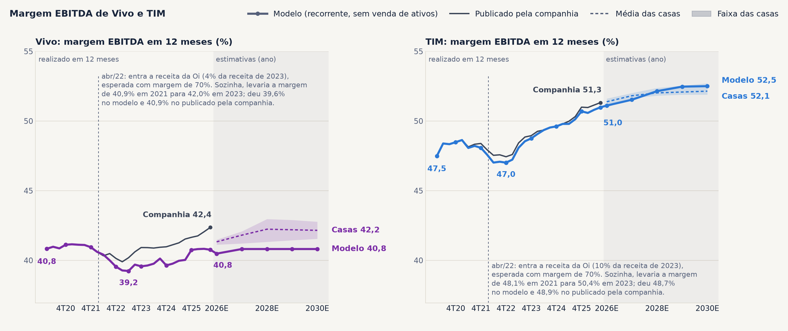
Fonte: planilhas de RI e modelos de 24/11/2026. Modelo: EBITDA recorrente, sem venda de ativos e outros não recorrentes. Companhia: EBITDA recorrente (Vivo) e normalizado (TIM), como publicados. Oi: apresentações de abril de 2022 e receita estimada. Casas: Itaú BBA, BBI, BTG, Santander e, na Vivo, UBS (até 2029E).
Duas medidas do realizado. Vivo: até 2021 o recorrente do modelo é o recorrente da companhia (41,1% em 2020, 40,9% em 2021); de 2022 em diante a companhia publica o recorrente igual ao contábil e o modelo tira a venda de ativos e outros itens. Modelo: 39,5% em 2022, 39,6% em 2023 e 2024, 40,7% em 2025 e 40,8% no 3T26, com piso de 39,2% no 2T23. Companhia: 40,1% em 2022, 40,9% em 2023, 41,0% em 2024, 41,7% em 2025 e 42,4% no 3T26. A diferença vai de 0,6 ponto em 2022 a 1,3 em 2023 e 2024, 0,9 em 2025 e 1,6 no 3T26. TIM: o modelo parte do normalizado da companhia e recusa alguns ajustes; modelo 48,5% em 2020, 48,1% em 2021, 47,0% em 2022, 48,7% em 2023, 49,6% em 2024, 50,7% em 2025 e 51,0% no 3T26; companhia 48,4% em 2021, 47,4% em 2022, 48,9% em 2023, 49,6% em 2024, 51,0% em 2025 e 51,3% no 3T26 (diferença de zero a 0,4 ponto). Estimativas: o modelo põe a Vivo em 40,5% em 2026E e 40,8% de 2027E a 2030E, contra média das casas de 41,3% em 2026E, 41,8% em 2027E e 42,2% de 2028E a 2030E (faixa de 41,5% a 42,8% em 2030E); a TIM em 51,1%, 51,5%, 52,1%, 52,5% e 52,5%, contra 51,4%, 51,8%, 52,0%, 52,1% e 52,1% nas casas (faixa de 51,9% a 52,7% em 2030E). Na Vivo, a média das casas para 2026E (41,3%) fica entre o modelo (40,5%) e o que a companhia já publica em 12 meses (42,4%): boa parte da distância do modelo para o consenso é a definição do EBITDA, e a base de cada casa não foi conferida. Oi: a compra fechou em 20/04/2022. A Vivo apresentou a base recebida com margem EBITDA acima de 70% no ritmo de sinergias; a TIM, 61% em 2022 e margem de contribuição na casa dos 70 em 2024; a Claro, 74% a 75%. A receita recebida é estimativa do estudo de 18/11/2026: cerca de R$ 1,9 bilhão por ano na Vivo (3,7% da receita líquida de 2023) e R$ 2,5 bilhões na TIM (10,4%). Conta: receita da Oi a 70% e o resto da receita na margem de 2021. Vivo: de 40,9% para 42,0% em 2023; deu 39,6% no modelo e 40,9% na companhia, o que implica margem de 38,4% no negócio sem a Oi, 2,5 pontos abaixo de 2021. TIM: de 48,1% para 50,4%; deu 48,7% no modelo e 48,9% na companhia (a conta pela base da companhia dá 50,6%), o que implica 46,3% sem a Oi, 1,8 ponto abaixo de 2021; a TIM só passa de 50,4% em 2025. No mesmo período o corte do ICMS (julho de 2022) também elevou a receita líquida. Os pontos realizados são a margem acumulada em quatro trimestres; os estimados são a margem do ano. A série desde 2010, com a quebra do IFRS 16 em 2019, saiu do slide a pedido.
2 · VIVO: DO EBITDA PUBLICADO AO RECORRENTE
Vivo: sem os ganhos pontuais, a margem EBITDA está em 40,8%, o nível de 2019 a 2021; a alta publicada para 42,4% vem de cobre, imóveis, acordos e créditos
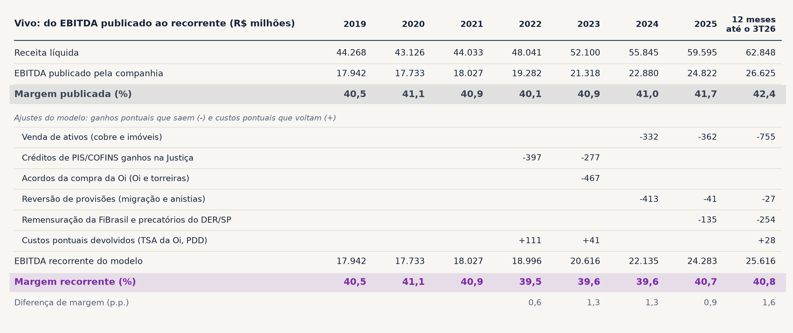
Fonte: planilha de RI, ITR e DFP da Vivo (notas de outras receitas operacionais) e modelo de 24/11/2026. De 2019 a 2021 o recorrente é o da própria companhia; de 2022 em diante ela publica o recorrente igual ao contábil e os ajustes são do modelo.
Margem recorrente: 40,5% em 2019, 41,1% em 2020, 40,9% em 2021, 39,5% em 2022, 39,6% em 2023 e 2024, 40,7% em 2025 e 40,8% em 12 meses até o 3T26. Margem publicada: 40,5%, 41,1%, 40,9%, 40,1%, 40,9%, 41,0%, 41,7% e 42,4%. A receita líquida foi de R$ 44,3 bilhões em 2019 para R$ 62,8 bilhões em 12 meses e o EBITDA recorrente de R$ 17,9 bilhões para R$ 25,6 bilhões: o EBITDA cresce com a receita, sem ganho de margem. Ajustes por ano. 2022: crédito de PIS/COFINS por decisão judicial de 396,7 (301,4 no 3T22 e 95,3 no 4T22; a companhia não tratou como não recorrente) e devolução de 111 de custo temporário do contrato de transição da Oi (37 por trimestre). 2023: crédito de PIS/COFINS de 276,7 (59,2, 147,3 e 70,2 nos três primeiros trimestres); acordo com a Oi, reversão de metade da retenção do ajuste pós-fechamento, 244,2 no 3T23; acordo com as torreiras das torres da Oi, 292,0 líquido de PIS/COFINS no 4T23; multas por desligamento de torres, -69,5; devolução de 37 do contrato de transição e 4 de PDD pontual. 2024: venda de ativos de 332 (31 no 2T24, 95 no 3T24 e 206 no 4T24); reversão de provisões regulatórias da migração da concessão, 386,4 no 4T24; anistia de São Paulo, 26,8. 2025: venda de ativos de 362,5; ganho de remensuração de 134,9 (FiBrasil 128,75 e Vivo Ventures 6,15) no 4T25; anistias, 41,4. Doze meses até o 3T26: venda de ativos de 755,4 (102,1, 86,3, 201,5 e 365,5 por trimestre); precatórios do DER/SP a valor presente, 119,2 no 3T26; remensuração de 134,9 do 4T25; anistias, 27,4; devolução de 28 de PDD de um cliente corporativo no 1T26. O programa de venda de cobre e imóveis da migração da concessão tem meta de R$ 4,5 bilhões até 2028, com cerca de R$ 1,0 bilhão realizado até o 3T26: a diferença entre a margem publicada e a recorrente tende a crescer. Em 2021 a companhia já excluía do seu recorrente R$ 979,9 milhões (crédito de PIS/COFINS líquido de contingências, 563,3, e fechamento da FiBrasil, 416,6); a margem contábil de 2021 foi 43,2%. Cada ajuste está no comentário da célula do modelo, com a nota do ITR ou da DFP.
2 · MARGEM DEPOIS DO ARRENDAMENTO
Depois do arrendamento, a margem da Vivo cai de 35,1% para 31,7% desde 2019; a da TIM sobe de 37,7% para 39,9%, com piso de 33,6% na compra da Oi
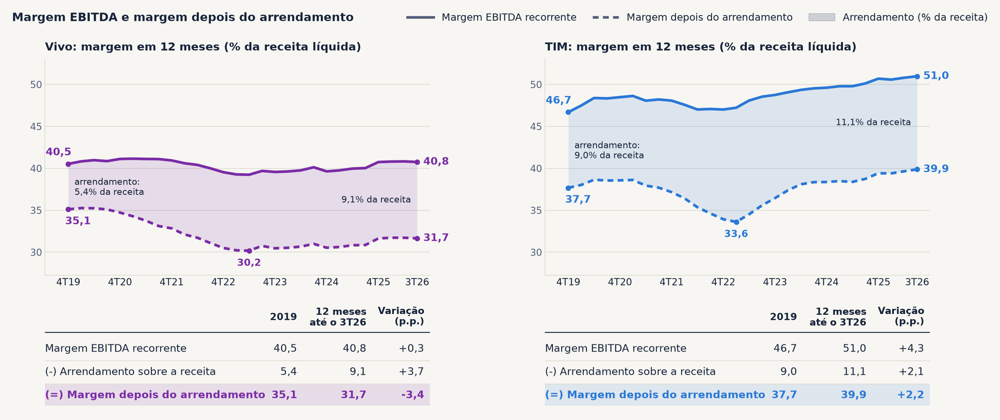
Fonte: planilhas de RI e modelos de 24/11/2026. Arrendamento = EBITDA menos EBITDA depois do arrendamento, como as companhias publicam (Vivo: depreciação e juros do IFRS 16; TIM: EBITDA-AL normalizado). Margem EBITDA recorrente do modelo.
Com o IFRS 16 (2019) o aluguel de torres, sites e lojas saiu do custo operacional e virou depreciação e juros, abaixo do EBITDA. Quando o arrendamento cresce mais que a receita, a margem EBITDA sobe sem ganho de caixa; a margem depois do arrendamento devolve esse custo. Vivo: arrendamento de 5,4% da receita em 2019, 6,4% em 2020, 8,1% em 2021, 9,0% em 2022 e 9,1% de 2023 em diante. Margem EBITDA recorrente de 40,5% em 2019 para 40,8% nos 12 meses até o 3T26 (+0,3 ponto); margem depois do arrendamento de 35,1% para 31,7% (-3,4 pontos), com 34,7% em 2020, 32,8% em 2021, 30,5% de 2022 a 2024, piso de 30,2% no 2T23 e 31,6% em 2025. A transferência de custo para arrendamento aconteceu toda entre 2019 e 2022; desde então o peso está parado em 9,1%. Pelo número publicado pela companhia (com venda de ativos e outros ganhos), a margem depois do arrendamento é 33,3% nos 12 meses, contra 35,1% em 2019. A dívida de arrendamento da Vivo foi de R$ 8,7 bilhões no 1T19 para R$ 16,2 bilhões no 3T26. TIM: arrendamento de 9,0% da receita em 2019, 9,9% em 2020, 10,9% em 2021, 13,1% em 2022 (torres da Oi), pico de 13,6% no 1T23, 12,3% em 2023, 11,2% em 2024, 11,3% em 2025 e 11,1% nos 12 meses. Margem EBITDA recorrente de 46,7% para 51,0% (+4,3 pontos); margem depois do arrendamento de 37,7% para 39,9% (+2,2 pontos), com 38,6% em 2020, 37,2% em 2021, 33,9% em 2022, piso de 33,6% no 1T23, 36,4% em 2023, 38,4% em 2024 e 39,4% em 2025. Na TIM, metade do ganho de margem EBITDA desde 2019 é arrendamento maior; desde 2022 é o contrário, o arrendamento perde peso e a margem depois do arrendamento sobe 6,0 pontos contra 4,0 da margem EBITDA. O que não foi aberto: por que o arrendamento da Vivo quase dobrou de peso entre 2019 e 2022 (contratos de torres, venda com aluguel de volta, torres da Oi) e o que os modelos assumem para frente. As duas companhias medem o arrendamento de forma diferente (a Vivo tira depreciação e juros; a TIM trata os contratos como aluguel operacional), o que limita a comparação de nível entre elas, não a de tendência.
3 · CRESCIMENTO DO EBITDA
EBITDA cresceu 6,5% ao ano na Vivo e 10,1% na TIM de 2021 a 2025; o modelo projeta 5,7% na Vivo e 4,2% na TIM em 2030E, acima da faixa das casas
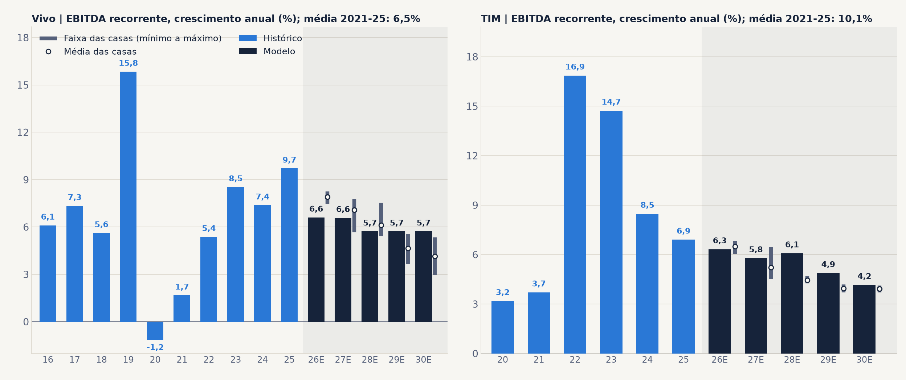
Fonte: planilhas de RI e modelos de 24/11/2026. Casas: Itaú BBA, BBI, BTG, Santander e, na Vivo, UBS. Vivo 2019: a adoção do IFRS 16 tira o aluguel do EBITDA. TIM 2022 e 2023: entrada dos clientes da Oi.
Vivo: 9,7% em 2025; o modelo projeta 6,6% em 2026E e 2027E e 5,7% de 2028E em diante. Fica abaixo das casas em 2026E (7,4% a 8,3%), dentro em 2027E e 2028E e acima em 2029E e 2030E (3,0% a 5,3% em 2030E). TIM: 6,9% em 2025; o modelo projeta 6,3%, 5,8%, 6,1%, 4,9% e 4,2%. Dentro da faixa em 2026E e 2027E e acima de 2028E em diante (4,2% a 4,7% em 2028E; 3,7% a 4,1% em 2030E).
4 · CAPEX: SOBRE A RECEITA E EM REAIS, MODELO CONTRA AS CASAS
Capex: pico de 20,7% da receita na Vivo (2014) e 28,8% na TIM (2016), hoje 15,6% e 17,1%; em reais, quase parado desde 2015; o modelo vai a 14,0% e 14,5%
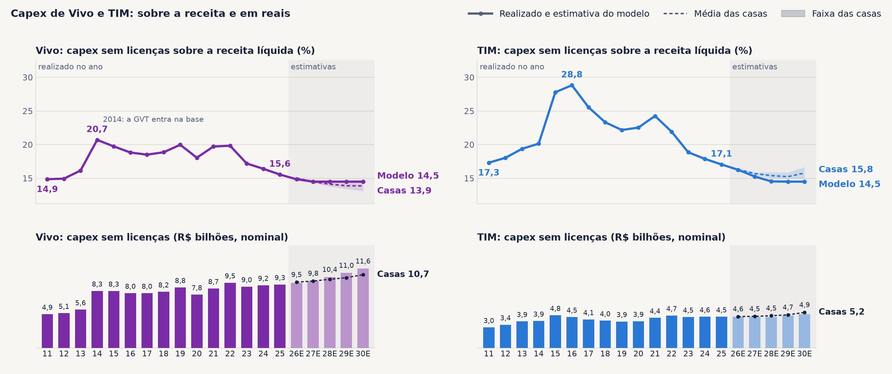
Fonte: planilhas de RI, releases e modelos de 24/11/2026. Capex sem licenças; Vivo com a GVT de 2014 em diante (pro forma). Casas: Itaú BBA, BBI, BTG, Santander e, na Vivo, UBS. UBS só até 2028E.
Capex sem licenças sobre a receita. Vivo: 14,9% em 2011 e 2012, 16,2% em 2013, pico de 20,7% em 2014 (ano em que a GVT entra na base, pro forma), 19,7% em 2015, 18,8% em 2016, 18,5% em 2017, 18,9% em 2018, 20,0% em 2019, 18,1% em 2020, 19,7% em 2021, 19,8% em 2022, 17,2% em 2023, 16,4% em 2024 e 15,6% em 2025. TIM: 17,3% em 2011, 18,0% em 2012, 19,4% em 2013, 20,1% em 2014, 27,8% em 2015, pico de 28,8% em 2016, 25,6% em 2017, 23,3% em 2018, 22,2% em 2019, 22,5% em 2020, 24,3% em 2021, 21,9% em 2022, 18,9% em 2023, 17,9% em 2024 e 17,1% em 2025. Dois ciclos: a rede 4G em 2014-2016 (na TIM com a receita caindo de R$ 20,0 bilhões em 2013 para R$ 15,6 bilhões em 2016) e o 5G com fibra em 2019-2022. Em reais nominais: Vivo de R$ 4,9 bilhões em 2011 para R$ 8,3 bilhões em 2014 e 2015, R$ 8,8 bilhões em 2019, R$ 9,5 bilhões em 2022 e R$ 9,3 bilhões em 2025; TIM de R$ 3,0 bilhões em 2011 para R$ 4,8 bilhões em 2015, R$ 3,9 bilhões em 2019, R$ 4,7 bilhões em 2022 e R$ 4,5 bilhões em 2025. Em dez anos (2015 a 2025) o capex nominal sobe 11% na Vivo e cai 5% na TIM, com a receita subindo 41% e 55%: a queda da razão desde 2022 é receita, não corte. Em reais de 2025 o capex cai de R$ 14,1 bilhões para R$ 9,3 bilhões na Vivo e de R$ 8,1 bilhões para R$ 4,5 bilhões na TIM entre 2015 e 2025. Estimativas. Vivo: o modelo põe 14,9% em 2026E e 14,0% de 2027E a 2030E (premissa baixada de 14,5% para 14,0% em 24/11/2026), com o capex parado em R$ 9,5 bilhões em 2026E e 2027E e subindo com a receita até R$ 11,2 bilhões em 2030E; casas em 15,1%, 14,5%, 14,1%, 13,9% e 13,9% (faixa de 13,1% a 14,6% em 2030E), com R$ 10,7 bilhões em 2030E; o modelo fica 0,5 ponto abaixo da média em 2027E, na média em 2028E e 0,1 acima em 2030E, com R$ 0,5 bilhão a mais de capex que a média das casas em 2030E. TIM: o modelo põe 16,3%, 15,3% e 14,5% de 2028E a 2030E, com o capex em R$ 4,5 bilhões em 2027E e 2028E e R$ 4,9 bilhões em 2030E; casas em 16,3%, 15,7%, 15,4%, 15,2% e 15,8% (faixa de 15,0% a 16,7% em 2030E), com R$ 5,2 bilhões em 2030E; o modelo fica 1,3 ponto abaixo da média e abaixo da casa mais baixa de 2028E em diante. Os 14,0% da Vivo e os 14,5% da TIM no modelo são o menor nível de cada série desde 2011 (a Vivo teve 14,9% em 2011 e 2012, antes da GVT). Fontes do realizado: Vivo pelo modelo até 2018 e pelo capex sem licenças da planilha de RI de 2019 em diante; TIM pelo modelo, com o capex orgânico de 2012 e 2014 dos releases e 2021 pelo capex sem licenças da companhia (R$ 4,38 bilhões). A emissão de arrendamento está no slide seguinte.
4 · CAPEX MAIS EMISSÃO DE ARRENDAMENTO: MODELO CONTRA AS CASAS
Com a emissão de arrendamento, o investimento é 21,8% da receita na Vivo e 27,2% na TIM em 2025; o modelo vai a 21,0% e 23,6%, perto das casas
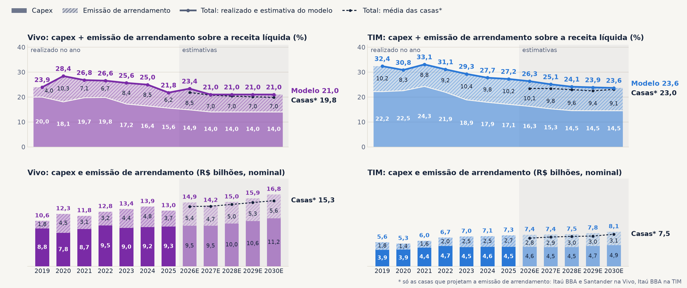
Fonte: planilhas de RI e modelos de 24/11/2026. Capex sem licenças; emissão = adições de arrendamento do ano (IFRS 16, desde 2019). Casas*: só as que projetam a emissão (Itaú BBA e Santander na Vivo, Itaú BBA na TIM).
Capex mais emissão de arrendamento sobre a receita. Vivo: 23,9% em 2019, 28,4% em 2020, 26,8% em 2021, 26,6% em 2022, 25,6% em 2023, 25,0% em 2024 e 21,8% em 2025; a emissão sozinha foi 4,0%, 10,3%, 7,1%, 6,7%, 8,4%, 8,5% e 6,2% da receita, e 9,2% nos 12 meses até o 3T26. Em reais: de R$ 10,6 bilhões em 2019 para R$ 13,9 bilhões em 2024 e R$ 13,0 bilhões em 2025, com a emissão indo de R$ 1,8 bilhão para R$ 4,8 bilhões e R$ 3,7 bilhões. Premissa de 24/11/2026: em 2026E a emissão fica em R$ 5,4 bilhões, 8,5% da receita (os nove meses somam R$ 3,65 bilhões, com R$ 2,4 bilhões no 3T26, e o 4T26 entra com R$ 1,8 bilhão; os três últimos quartos trimestres foram de cerca de R$ 2,2 bilhões cada), e cai para 7,0% da receita de 2027E em diante (antes 8,5%). Total de 23,4% em 2026E e 21,0% de 2027E a 2030E; em reais, R$ 14,9 bilhões em 2026E, R$ 14,2 bilhões em 2027E e R$ 16,8 bilhões em 2030E. As duas casas que projetam a emissão (Itaú BBA e Santander) ficam em 21,8%, 20,7%, 20,4%, 20,1% e 19,8% na média, com emissão perto de 6% da receita e total de R$ 15,3 bilhões em 2030E; o modelo fica 1,2 ponto e R$ 1,5 bilhão acima em 2030E. TIM: 32,4% em 2019, 30,8% em 2020, 33,1% em 2021, 31,1% em 2022, 29,3% em 2023, 27,7% em 2024 e 27,2% em 2025; a emissão foi 10,2%, 8,3%, 8,8%, 9,2%, 10,4%, 9,8% e 10,2% da receita. Em reais: de R$ 5,6 bilhões em 2019 para R$ 7,3 bilhões em 2025, com a emissão indo de R$ 1,8 bilhão para R$ 2,7 bilhões. Premissa de 24/11/2026: emissão de R$ 2,8 bilhões em 2026E, 10,1% da receita (os nove meses somam R$ 1,66 bilhão e o 4T26 entra com R$ 1,17 bilhão, acima dos R$ 0,4 a 0,7 bilhão dos três últimos quartos trimestres), e crescimento de 2,5% ao ano depois, metade do ritmo da receita (antes crescia com a receita móvel). A emissão cai de 10,1% da receita em 2026E para 9,8% em 2027E e 9,1% em 2030E; total de 26,3% em 2026E, 25,1% em 2027E e 23,6% em 2030E, de R$ 7,4 bilhões para R$ 8,1 bilhões. O Itaú BBA, única casa que projeta a emissão da TIM, fica em 23,4%, 23,4%, 22,9%, 22,5% e 23,0%, com emissão de 7,5% da receita e total de R$ 7,5 bilhões em 2030E; o modelo fica 0,6 ponto acima em 2030E (capex 1,1 ponto menor, emissão 1,6 ponto maior) e R$ 0,6 bilhão acima em reais. Leitura: de 2019 a 2025 o capex sobre a receita caiu 4,4 pontos na Vivo e 5,1 na TIM, mas o total com arrendamento caiu 2,1 e 5,2 pontos; na Vivo, metade da queda do capex foi trocada por arrendamento, e nos 12 meses até o 3T26 o total (24,4%) está acima de 2019. A emissão é volátil de um ano para o outro, mistura contrato novo com renovação e reajuste e não pega contrato de serviço; vale mais a média de alguns anos que o ano isolado (Vivo 2021 a 2025: 7,4% da receita; TIM: 9,7%).
4 · INVESTIMENTO CONTRA OS PARES DE FORA E QUALIDADE DA REDE NO BRASIL
Vivo e TIM investem acima dos pares de fora (21,8% e 27,2% da receita contra 19,1%) e a rede melhora: 4G de 12-21 para 24-27 Mbps desde 2022
Fonte: relatórios das companhias (levantamento de 18/11/2026, último ano fiscal), dados abertos da Anatel e modelos de 24/11/2026. Download 4G e cumprimento de velocidade: resultado dos municípios ponderado pelos acessos.
Pares de fora, capex sem espectro e capex mais adições de arrendamento sobre a receita, 2025 ou último ano fiscal: América Móvil 12,1% e 13,8%; Verizon 12,3% e 15,7%; T-Mobile US 11,3% e 15,8%; China Mobile 14,4% e 17,7%; Orange 15,4% e 17,9%; Deutsche Telekom (grupo, com os Estados Unidos) 14,2% e 18,0%; TIM Itália sem a rede fixa 13,9% e 18,2%; Telenor 13,8% e 18,7%; Telefónica 12,4% e 19,4%; Telstra 16,3% e 19,6%; A1 14,0% e 19,7%; AT&T 16,6% e 21,0%; Rogers 17,1% e 21,1%; KPN 21,7% e 22,4%; Vodafone 18,0% e 27,5%; Bharti Airtel 22,5% e 28,2%. Mediana de 14,3% no capex e 19,1% no total. Brasil: Vivo 15,6% e 21,8% em 2025; TIM 17,1% e 27,2%. O capex fica 1 a 3 pontos acima da mediana; o que afasta o Brasil é o arrendamento, 6% a 10% da receita contra 3% a 7% lá fora. Modelo em 2030E: Vivo 14,0% e 21,0%; TIM 14,5% e 23,6%, ou seja, 2 a 4,5 pontos acima da mediana de hoje, entre AT&T e KPN. A adição de arrendamento oscila de um ano para o outro: na média de três anos a mediana dos pares é a mesma (19,1%), a Vivo fica em 24,1% e a TIM em 28,1%. Fora da amostra: Millicom e Swisscom, com 2025 distorcido por adições fora do padrão, e a Claro, que só tem o arrendamento pago na CVM (26,3% da receita com o capex em 2025). Qualidade da rede, Anatel, 2022 a 2026 (janeiro a setembro). Download 4G medido: Vivo 15,4, 17,7, 23,0, 25,7 e 26,9 Mbps; TIM 12,3, 14,2, 16,0, 19,7 e 23,6; Claro 21,2, 19,0, 22,4, 24,1 e 26,5. Cumprimento da velocidade contratada (indicador 4 do regulamento de qualidade): Vivo de 81,7% para 88,2%; TIM de 82,5% para 89,6%; Claro de 88,5% para 91,8%; a referência do indicador mudou em 2025 e o número recua cerca de 1 ponto no 1T25 nas três. No mesmo período o capex alocado ao móvel pelo setor caiu de 17,1% para 13,9% da receita (base de indicadores econômicos da Anatel, pode incluir licenças). Estações licenciadas: Vivo de 30,2 mil para 39,2 mil, TIM de 26,9 mil para 37,2 mil, Claro de 23,0 mil para 32,9 mil. Leitura: não há sinal de perda de qualidade com o capex caindo, o que sustenta o investimento menor dos modelos. Pontos de atenção: a nota de qualidade de 2025, único ano publicado, é 93 na Claro (selo B), 90 na Vivo (B) e 86 na TIM (C), e a latência da TIM piora desde 2024 (cumprimento de 91,4% para 88,7%); a TIM é a que tem a menor nota e é onde o modelo mais corta o investimento. Tráfego de dados do setor (a Anatel não abre por operadora): 4,5 bilhões de GB em 2019, 6,5 em 2020, 7,5 em 2021, 11,8 em 2022, 13,7 em 2023, 14,4 em 2024 e 14,7 em 2025, ou seja, quase parado por três anos; no primeiro semestre de 2026 foram 8,5 bilhões contra 7,0 um ano antes (+22%), com o trimestre subindo de 3,4 bilhões no 1T25 para 4,4 no 2T26. É o número a acompanhar: a folga de rede que o slide mostra foi construída com tráfego parado. O upload do 5G cai nas três desde 2023. Não há comparação de qualidade com os pares de fora neste slide: a evidência é a tendência local. As definições de capex e de arrendamento variam entre companhias.
4 · DEPRECIAÇÃO E ARRENDAMENTO PAGO SOBRE A RECEITA
D&A cai de 25,1% para 19,0% da receita na Vivo e de 26,6% para 20,0% na TIM até 2030E; na TIM o modelo fica 1,5 ponto abaixo das casas
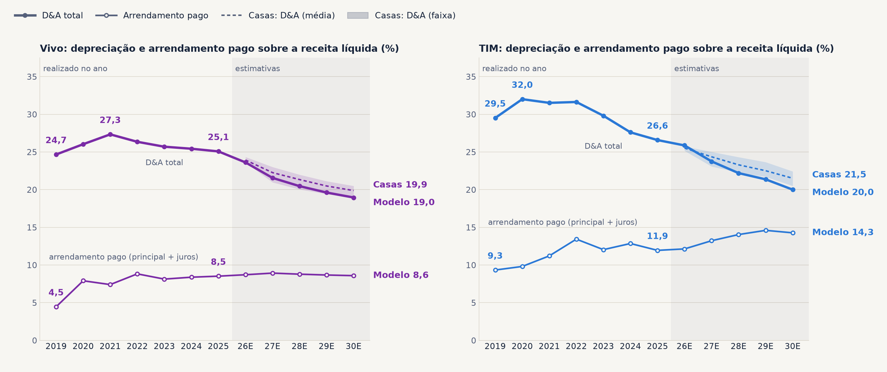
Fonte: planilhas de RI e modelos de 24/11/2026. D&A total, com a depreciação do direito de uso e a amortização de licenças. Arrendamento pago = principal + juros. Casas: Itaú BBA, BBI, BTG, Santander e, na Vivo, UBS. UBS só até 2028E.
Depreciação e amortização total sobre a receita. Vivo: 24,7% em 2019, 26,0% em 2020, 27,3% em 2021, 26,4% em 2022, 25,7% em 2023, 25,4% em 2024 e 25,1% em 2025 (R$ 14,9 bilhões). Modelo: 23,6% em 2026E, 21,6% em 2027E, 20,5% em 2028E, 19,6% em 2029E e 19,0% em 2030E, com a D&A parada perto de R$ 15 bilhões e a receita crescendo. Casas: média de 23,9%, 22,3%, 21,3%, 20,5% e 19,9%, com faixa de 18,9% a 20,5% em 2030E; o modelo fica 0,9 ponto abaixo da média em 2030E, dentro da faixa. Composição da D&A da Vivo em 2025: imobilizado R$ 7,3 bilhões, direito de uso R$ 3,7 bilhões, outros intangíveis R$ 2,6 bilhões e licenças R$ 1,3 bilhão; a depreciação acelerada do cobre e dos legados (R$ 0,3 bilhão por trimestre do 3T24 ao 2T26) termina em 2026. TIM: 29,5% em 2019, 32,0% em 2020, 31,5% em 2021, 31,6% em 2022, 29,8% em 2023, 27,6% em 2024 e 26,6% em 2025 (R$ 7,1 bilhões). Modelo: 25,9% em 2026E, 23,8% em 2027E, 22,2% em 2028E, 21,4% em 2029E e 20,0% em 2030E; a D&A vai de R$ 7,3 bilhões em 2026E para R$ 7,0 bilhões em 2027E e R$ 6,8 bilhões em 2030E. Casas: média de 25,5%, 24,4%, 23,3%, 22,5% e 21,5%, com faixa de 20,5% a 22,4% em 2030E; o modelo fica dentro da faixa em 2027E, no piso em 2028E e 0,5 ponto abaixo da casa mais baixa em 2030E, 1,5 ponto abaixo da média, cerca de R$ 0,5 bilhão de lucro antes do imposto. No modelo da TIM a D&A é um percentual do ativo permanente, que inclui a emissão de arrendamento: com a emissão de 2026E de volta a R$ 2,8 bilhões, a D&A projetada subiu. Arrendamento pago (principal mais juros) sobre a receita. Vivo: 4,5% em 2019, 7,9% em 2020, 7,4% em 2021, 8,8% em 2022, 8,1% em 2023, 8,4% em 2024 e 8,5% em 2025 (R$ 5,1 bilhões); modelo em 8,7% em 2026E, 8,9% em 2027E e 8,6% em 2030E. TIM: 9,3% em 2019, 9,8% em 2020, 11,2% em 2021, 13,4% em 2022 (torres da Oi), 12,0% em 2023, 12,9% em 2024 e 11,9% em 2025 (R$ 3,2 bilhões); modelo em 12,1% em 2026E, 13,2% em 2027E, 14,0% em 2028E, 14,6% em 2029E e 14,3% em 2030E, porque a taxa de amortização do passivo sobe ano a ano no modelo. As duas linhas não se somam: a D&A já tem a depreciação do direito de uso, que é a contrapartida contábil do principal pago, e os juros do arrendamento estão no resultado financeiro. O arrendamento pago é a medida de caixa; a D&A, a de resultado.
4 · INVESTIMENTO TOTAL CONTRA DEPRECIAÇÃO TOTAL
Investimento empata com a depreciação desde 2019 e as casas põem a D&A acima do investimento até 2029: por quanto tempo dá para consumir ativo?
Fonte: planilhas de RI e modelos de 24/11/2026. Investimento total = capex sem licenças + emissão de arrendamento. D&A total inclui a amortização de licenças. Casas: só as que projetam a emissão (Itaú BBA e Santander na Vivo, Itaú BBA na TIM).
Pergunta do slide: as companhias constroem ou consomem o ativo (imobilizado mais direito de uso), e por quanto tempo dá para ficar com a depreciação acima do investimento? A conta compara o que entra, capex sem licenças mais emissão de arrendamento, com o que sai pela depreciação e amortização total; as duas medidas são de competência. O arrendamento pago não entra aqui: ele reduz o passivo, não o ativo, e a sua contrapartida contábil, a depreciação do direito de uso, já está na D&A. Vivo, investimento menos D&A em R$ bilhões: -0,3 em 2019, +1,0 em 2020, -0,2 em 2021, +0,1 em 2022, zero em 2023, -0,3 em 2024 e -2,0 em 2025, soma de -1,7 em sete anos; a relação D&A sobre investimento fica entre 0,92 e 1,03 de 2019 a 2024 e vai a 1,15 em 2025. Modelo: -0,2 em 2026E, -0,4 em 2027E, +0,4 em 2028E, +1,0 em 2029E e +1,6 em 2030E, soma de +2,5. Cobre: a Vivo depreciou de forma acelerada as tecnologias legadas, incluindo os ativos de cobre, do 3T24 ao 2T26, com impacto aproximado de R$ 0,3 bilhão por trimestre (release do 2T26), ou R$ 0,6 bilhão em 2024, R$ 1,2 bilhão em 2025 e R$ 0,6 bilhão em 2026. Sem isso a D&A seria 24,4% da receita em 2024, 23,1% em 2025 e 22,7% em 2026E, e a diferença seria +0,3 em 2024, -0,8 em 2025 e +0,4 em 2026E; a soma de 2019 a 2025 passa de -1,7 para +0,1 e a de 2026E a 2030E de +2,5 para +3,1. TIM: +0,5 em 2019, -0,2 em 2020, +0,3 em 2021, -0,1 em 2022 e em 2023, zero em 2024 e +0,2 em 2025, soma de +0,5; relação entre 0,91 e 1,04. Modelo: +0,1 em 2026E, +0,4 em 2027E, +0,6 em 2028E, +0,8 em 2029E e +1,2 em 2030E, soma de +3,2. Casas que projetam a emissão de arrendamento, mesma conta com os números delas. Vivo no Itaú BBA: -1,6 em 2026E, -1,4 em 2027E, -1,0 em 2028E, -0,6 em 2029E e -0,4 em 2030E, soma de -5,0. Vivo no Santander: -1,0, -1,3, -0,7, zero e zero, soma de -3,0. TIM no Itaú BBA: -0,7, -0,4, -0,2, -0,1 e +0,4, soma de -1,0. As outras casas não projetam a emissão; nelas a D&A fica 5,3 a 9,5 pontos da receita acima do capex, mais do que a emissão que as casas acima usam (cerca de 6% da receita na Vivo e 7,5% na TIM). A provocação: no realizado as duas empatam há sete anos, e as casas estendem a depreciação acima do investimento até 2029; somando os dois períodos, seriam mais de dez anos sem aumentar o ativo em reais nominais, com inflação no caminho. Ou a rede aguenta com menos ativo (o slide de qualidade diz que até aqui aguentou), ou o capex volta a subir, ou a D&A cai mais rápido do que as casas projetam, que é o que os modelos de Vivo e TIM assumem. Ressalvas: a D&A inclui a amortização de licenças e o investimento não inclui as licenças compradas. Na Vivo a amortização de licenças é de cerca de R$ 1,25 bilhão por ano (R$ 8,4 bilhões de 2019 a 2025; R$ 6,3 bilhões de 2026E a 2030E no modelo): sem ela, a soma realizada da Vivo passa de -1,7 para +6,7 e a das casas de -5,0 para cerca de +1,2 (Itaú BBA) e de -3,0 para +3,2 (Santander), usando a amortização do modelo, porque as casas não abrem a delas. Quando o investimento cai sobre a receita, a D&A demora a acompanhar, porque reflete o capex maior dos anos anteriores; D&A acima do investimento por alguns anos é o esperado. A emissão de arrendamento mistura contrato novo com renovação e reajuste.
4 · ATIVO IMOBILIZADO TOTAL CONTRA A RECEITA BRUTA
Receita bruta cresce 22% na Vivo e 37% na TIM desde 2019 com o ativo crescendo 11% e 32%; os modelos levam o ativo a 53% e 65% da receita bruta em 2030E
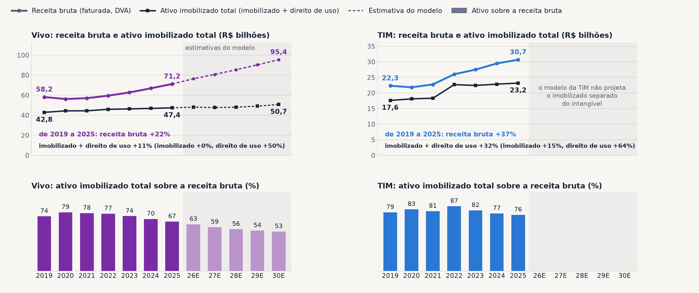
Fonte: DFP (CVM) e modelos de 24/11/2026. Ativo imobilizado total = imobilizado + direito de uso, líquido de depreciação. Receita bruta = vendas da DVA (faturado, sem descontos). Estimativas: receita líquida dos modelos pela relação bruta/líquida de 2025; na TIM, ativo permanente do modelo na proporção de 2025.
Desvinculação aqui é a receita crescer sem o ativo crescer junto. Vivo: receita bruta de R$ 58,2 bilhões em 2019 para R$ 71,2 bilhões em 2025 (+22%); ativo imobilizado total de R$ 42,8 bilhões para R$ 47,4 bilhões (+11%). O imobilizado próprio ficou parado (R$ 34,1 bilhões em 2019, R$ 34,2 bilhões em 2025); todo o crescimento veio do direito de uso, de R$ 8,8 bilhões para R$ 13,1 bilhões (+50%). Ativo sobre a receita bruta: 74% em 2019, 79% em 2020, 78% em 2021, 77% em 2022, 74% em 2023, 70% em 2024 e 67% em 2025. TIM: receita bruta de R$ 22,3 bilhões para R$ 30,7 bilhões (+37%, com a Oi em 2022); ativo de R$ 17,6 bilhões para R$ 23,2 bilhões (+32%), com imobilizado +15% e direito de uso +64% (torres da Oi). Ativo sobre a receita bruta: 79% em 2019, 83% em 2020, 81% em 2021, 87% em 2022, 82% em 2023, 77% em 2024 e 76% em 2025. Na TIM a desvinculação só aparece depois de 2022; no período inteiro, receita e ativo andaram quase juntos. O que o modelo assume. Vivo: ativo de R$ 48,0 bilhões em 2026E, R$ 47,7 bilhões em 2027E e R$ 50,7 bilhões em 2030E, contra receita bruta de R$ 95,4 bilhões em 2030E; a relação cai para 63% em 2026E, 59% em 2027E, 56% em 2028E, 54% em 2029E e 53% em 2030E. Para manter em 2030E os 67% de 2025, a Vivo precisaria de R$ 63,5 bilhões de ativo, R$ 12,8 bilhões a mais do que o modelo projeta: esse é o tamanho da aposta na desvinculação, cerca de R$ 2,6 bilhões por ano de investimento que o modelo não faz. TIM: o balanço projetado do modelo tem uma linha só para o ativo permanente (imobilizado, direito de uso, licenças e demais intangíveis), que vai de R$ 39,0 bilhões em 2025 para R$ 42,7 bilhões em 2030E. A estimativa do slide mantém em 59% a parte de imobilizado e direito de uso de 2025: R$ 23,6 bilhões em 2026E e R$ 25,4 bilhões em 2030E, contra receita bruta de R$ 39,3 bilhões; a relação cai para 73% em 2026E, 70% em 2027E, 68% em 2028E, 66% em 2029E e 65% em 2030E. Para manter os 76% de 2025 seriam R$ 29,7 bilhões de ativo em 2030E, R$ 4,3 bilhões a mais. Essa abertura é uma aproximação do slide, não uma linha do modelo. A favor da desvinculação: o cobre e as tecnologias legadas saem da base, a fibra e o 5G carregam mais tráfego por real investido, há compartilhamento de rede e redes neutras, e parte da receita nova (digital, B2B, serviços financeiros) não usa rede. Contra: a receita está em reais correntes e o ativo a custo histórico, então com inflação a relação cai sozinha, sem ganho de eficiência; de 2019 a 2025 a receita bruta da Vivo cresceu menos que a inflação. Além disso, o tráfego de dados do setor voltou a crescer em 2026 (+22% no primeiro semestre) e a queda de 2023 a 2025 coincide com o tráfego parado. A medida não inclui intangíveis (licenças, software, ágio).
5 · LUCRO LÍQUIDO PARA FRENTE
Lucro recorrente: Vivo de 6,6 bi (2025) para 10,9 bi (2030E) e TIM de 4,2 bi para 6,5 bi; com venda de ativos, a Vivo fica dentro da faixa das casas até 2028E
Fonte: planilhas de RI e modelos de 24/11/2026. Casas: Itaú BBA, BBI, BTG, Santander e, na Vivo, UBS. O lucro das casas para a Vivo inclui o ganho com venda de ativos de 2026E a 2028E.
Vivo, lucro recorrente do modelo: 7,1 bi em 2026E, 8,1 bi, 9,1 bi, 10,0 bi e 10,9 bi em 2030E. Com venda de ativos: 7,4 bi, 9,7 bi e 10,1 bi de 2026E a 2028E, dentro da faixa das casas (9,1 a 10,3 bi em 2027E); em 2029E e 2030E, 10,0 bi e 10,9 bi, abaixo da faixa (10,1 a 11,3 bi e 10,9 a 12,2 bi). TIM: 4,0 bi em 2026E, abaixo das casas (4,3 a 4,4 bi); 4,7 bi e 5,5 bi em 2027E e 2028E, dentro; 5,9 bi em 2029E e 6,5 bi em 2030E, dentro (5,4 a 5,9 bi e 5,8 a 6,7 bi).
6 · PAYOUT DOS ÚLTIMOS ANOS × PAYOUT POTENCIAL
Payout de 2019 a 2025: Vivo pagou 107% com potencial de 134%; TIM pagou 71% com potencial de 78%. Em 2030E o modelo cai para 88% a 89%, abaixo das casas
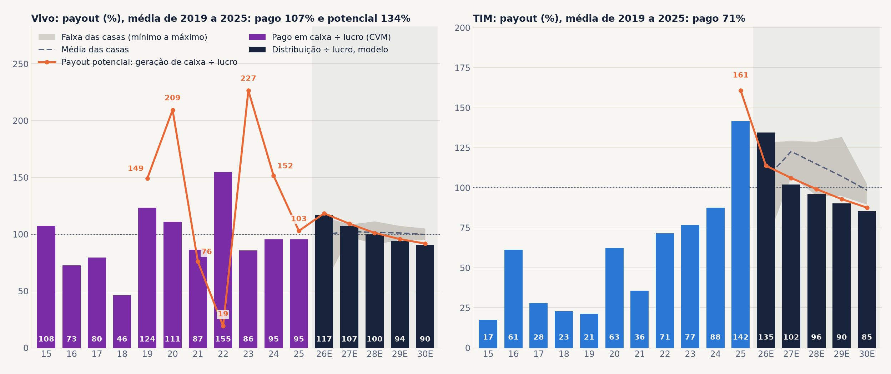
Fonte: CVM (DFP: dividendos, JCP, recompra e redução de capital pagos sobre o lucro) e modelos de 24/11/2026. Potencial = linha Geração Caixa / LL dos modelos. Casas: Itaú BBA, BBI, BTG, Santander e, na Vivo, UBS.
Vivo: o potencial oscila com capital de giro e Fistel (209% em 2020, 19% em 2022, 227% em 2023) e fica em 103% em 2025. O modelo distribui 117% do lucro recorrente em 2026E, 104% em 2027E e 89% em 2030E. Sobre o lucro com venda de ativos, como nas casas: 112%, 88% e 87% de 2026E a 2028E, contra 98% a 109% das casas em 2027E; em 2030E, 89% contra 95% a 105%. TIM: pagou 142% em 2025, com potencial de 147%; o modelo distribui toda a geração de caixa, 135% em 2026E, 103% em 2027E e 88% em 2030E, contra 107% a 129% das casas em 2027E e 90% a 101% em 2030E.
7 · FISTEL: O QUE É, DESDE QUANDO NÃO É PAGO E ONDE APARECE
A taxa anual de R$ 8,85 por chip está suspensa por liminar desde 2020: segue como despesa no resultado, não sai do caixa e já soma R$ 12,6 bi de passivo
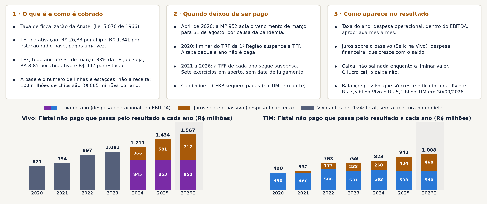
Fonte: Lei 5.070/1966 (arts. 6º e 8º e Anexo I, texto compilado), ITR do 3T26 de Vivo e TIM (CVM) e modelos de 24/11/2026. TFF = 33% da TFI. Vivo antes de 2024: total do ano, sem a abertura entre taxa e juros no modelo.
O que é. O Fistel é o fundo de fiscalização das telecomunicações, criado pela Lei 5.070 de 1966 e alimentado por duas taxas. A taxa de instalação (TFI) é devida uma vez, na emissão da licença de cada estação: pelo Anexo I da lei, R$ 26,83 por estação móvel (o chip) e R$ 1.340,80 por estação base no Serviço Móvel Celular. A taxa de funcionamento (TFF) é devida todo ano, até 31 de março, sobre as estações licenciadas no fim do ano anterior, e vale 33% da TFI desde a Lei 12.485 de 2011 (era 50% na lei original e 45% a partir da Lei 11.652 de 2008): R$ 8,85 por chip e R$ 442 por estação base. A base é quantidade de linhas, não receita: cem milhões de chips são R$ 885 milhões por ano, a mesma ordem de grandeza da taxa do ano da Vivo no modelo (R$ 845 a 853 milhões em 2024 e 2025); na TIM a taxa do ano fica entre R$ 480 e 586 milhões desde 2020. Quando deixou de ser paga. Pelo ITR da TIM: em 2020 a Medida Provisória 952, de 15 de abril, adiou para 31 de agosto os vencimentos de TFF, Condecine e CFRP; dos valores de 2020 a companhia pagou CFRP e Condecine, mas por força de liminar não pagou a TFF, que ficou em aberto até decisão final; de 2021 a 2026 houve pagamento parcial de CFRP e Condecine a cada ano, com a TFF suspensa por liminar do Tribunal Regional Federal da 1ª Região. Pelo ITR da Vivo: os saldos de 2020 a 2026 estão com a exigibilidade suspensa por decisões do TRF da 1ª Região, sem perspectiva de julgamento no curto prazo, classificados no passivo não circulante e atualizados pela Selic. Como aparece no resultado. A taxa do ano continua sendo despesa operacional, dentro do EBITDA, apropriada mês a mês (a TIM diz que apropria de forma linear; a Vivo registra no início do ano uma despesa antecipada de TFF, Condecine e EBC e amortiza até dezembro). Os juros sobre o saldo não pago entram no resultado financeiro. Nada disso sai do caixa. Passivo em 30/09/2026: Vivo R$ 7.527,9 milhões (R$ 6.147,8 milhões em 31/12/2025); TIM R$ 5.066 milhões, dos quais R$ 3.593 milhões de principal e R$ 1.473 milhões de juros (R$ 4.320 milhões em 31/12/2025, sendo 3.188 e 1.131). Fistel não pago que passa pelo resultado, por ano. Vivo: R$ 671 milhões em 2020, 754 em 2021, 997 em 2022, 1.081 em 2023, 1.211 em 2024 (845 de taxa e 366 de juros), 1.434 em 2025 (853 e 581) e 1.567 em 2026E (850 e 717). TIM: R$ 490 milhões em 2020, 532 em 2021 (480 e 52), 763 em 2022 (586 e 177), 769 em 2023 (531 e 238), 823 em 2024 (563 e 260), 942 em 2025 (538 e 404) e 1.008 em 2026E (540 e 468). Leitura: a taxa do ano está parada porque depende do número de chips; o que cresce são os juros, que na Vivo passaram de 30% do total em 2024 para 46% em 2026E e na TIM de 10% em 2021 para 46% em 2026E. Quanto mais tempo a liminar dura, maior a parte do lucro que é despesa sem saída de caixa, e é isso que sustenta o payout acima de 100% do slide seguinte. Ressalvas: os números da Vivo antes de 2024 são a variação anual do passivo no modelo, sem separar taxa e juros; não foi conferido em fonte primária o tratamento das linhas de máquina (M2M), que têm regra própria, nem os valores unitários de Condecine e CFRP; o passivo de Fistel não entra na dívida líquida que as companhias divulgam.
7 · FISTEL: O QUE SUSTENTA O PAYOUT ACIMA DE 100%
Casas mantêm o payout perto de 100% ou acima até 2030E; o Fistel não pago libera 12% a 17% do lucro por ano em caixa e o passivo vai a R$ 15 bi e R$ 10 bi
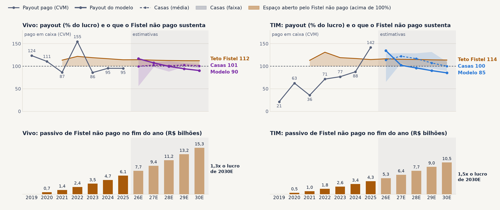
Fonte: DFP e ITR (CVM) e modelos de 24/11/2026. Fistel não pago do ano = taxa do exercício + juros sobre o passivo, depois de imposto de 34%, sobre o lucro recorrente. Passivo projetado com a suspensão mantida. Casas: Itaú BBA, BBI, BTG, Santander e, na Vivo, UBS.
A taxa de fiscalização (TFF do Fistel) está com a exigibilidade suspensa por liminar desde o exercício de 2020. A taxa do ano entra como despesa dentro do EBITDA e os juros sobre o passivo entram no resultado financeiro; nenhum dos dois sai do caixa. O lucro já vem menor por causa deles, mas o caixa não: a diferença é payout que cabe acima de 100% do lucro. Vivo, Fistel não pago do ano: R$ 1,43 bilhão em 2025, R$ 1,57 bilhão em 2026E, R$ 1,69 bilhão em 2027E e R$ 2,13 bilhões em 2030E; depois do imposto, 14,3% do lucro recorrente em 2025, 14,5% em 2026E, 13,5% em 2027E e 12,2% em 2030E (foi 21,8% em 2022). Passivo: R$ 0,7 bilhão em 2020, R$ 6,1 bilhões em 2025, R$ 7,7 bilhões em 2026E e, com a suspensão mantida, R$ 9,4 bilhões em 2027E e R$ 15,3 bilhões em 2030E, 1,3 vez o lucro daquele ano. TIM: R$ 0,94 bilhão em 2025, R$ 1,01 bilhão em 2026E e R$ 1,44 bilhão em 2030E; 14,8% do lucro em 2025, 16,5% em 2026E, 15,3% em 2027E e 13,8% em 2030E (31,0% em 2022). Passivo: R$ 4,3 bilhões em 2025, R$ 5,3 bilhões em 2026E e R$ 10,5 bilhões em 2030E, 1,5 vez o lucro. Payout pago em caixa (CVM). Vivo: 124% em 2019, 111% em 2020, 87% em 2021, 155% em 2022, 86% em 2023 e 95% em 2024 e 2025. TIM: 21% em 2019, 63% em 2020, 36% em 2021, 71% em 2022, 77% em 2023, 88% em 2024 e 142% em 2025. Payout das casas, distribuição sobre o lucro delas. Vivo: média de 97% em 2026E, 103% em 2027E, 104% em 2028E, 102% em 2029E e 100% em 2030E; Itaú BBA 114%, 109%, 106%, 100% e 100%; UBS 108%, 98%, 111%, 107% e 105%; Santander 102%, 105% e 100% de 2028E em diante; BTG 104%, 98%, 96%, 99% e 99%; BBI 56% em 2026E e 104% a 106% de 2027E a 2029E. TIM: média de 111%, 122%, 115%, 107% e 98%; Itaú BBA 125% de 2026E a 2028E e 100% depois; Santander 129%, 125%, 110% e 100%; BBI 66% em 2026E e 129% a 132% de 2027E a 2029E; BTG 125%, 107%, 95%, 95% e 90%. Modelo: Vivo 117%, 107%, 100%, 94% e 90%; TIM 135%, 102%, 96%, 90% e 85%. Leitura: na Vivo, o que as casas pagam acima de 100% (até 4 pontos na média, até 14 no Itaú BBA) cabe dentro do Fistel não pago (12 a 14 pontos). Na TIM a média chega a 122% em 2027E, acima dos 115% que o lucro mais o Fistel sustentam; o resto vem da depreciação acima do investimento (slide 14). Nenhuma casa leva o payout abaixo de 90% até 2030E: o mercado projeta para sempre uma distribuição que depende de a taxa continuar não sendo paga, enquanto o passivo passa de uma vez o lucro anual. No preço-alvo a maioria desconta o estoque (Itaú BBA, Santander e BTG tiram de R$ 1,9 a R$ 2,9 por ação; BBI quase nada), mas no fluxo ninguém volta a pagar a taxa. Ressalvas: o payout acima de 100% também pode vir de capital de giro e de depreciação acima do investimento, então o Fistel é suficiente para explicar o excesso da Vivo, não a única explicação; a alíquota de 34% supõe que a despesa é dedutível hoje; pela Lei 6.404, distribuir acima do lucro e das reservas exige redução de capital, que a Vivo já fez (R$ 2 bilhões em 2025 e R$ 4 bilhões em 2026); a faixa das casas em 2026E é puxada para baixo pelo BBI.
7 · FISTEL: O LUCRO SEM A DESPESA E O PAYOUT SE A TAXA VOLTAR A SER PAGA
Sem a despesa de Fistel o lucro sobe 12% a 17%; se a taxa voltar a ser paga, o payout perde 12 a 15 p.p. e fica em 100% ou menos de 2028E em diante
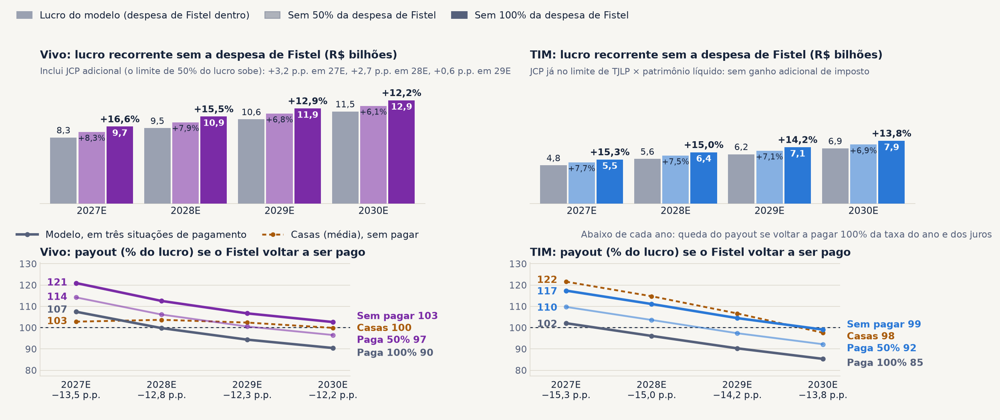
Fonte: modelos de 24/11/2026 e ITR do 3T26 (CVM). Despesa de Fistel = taxa do ano + juros sobre o passivo, com imposto de 34%; JCP adicional limitado a TJLP × patrimônio líquido. A distribuição dos modelos não conta com o Fistel. Casas: Itaú BBA, BBI, BTG, Santander e, na Vivo, UBS.
Duas perguntas. Primeira: quanto o lucro sobe se a despesa de Fistel sair do resultado, inteira ou pela metade. Segunda: quanto o payout cai se a taxa voltar a ser paga. A despesa é a soma da taxa do ano (dentro do EBITDA) com os juros sobre o passivo (no resultado financeiro). Vivo: R$ 1,69 bilhão em 2027E, R$ 1,83 bilhão em 2028E, R$ 1,97 bilhão em 2029E e R$ 2,13 bilhões em 2030E. TIM: R$ 1,11 bilhão, R$ 1,27 bilhão, R$ 1,33 bilhão e R$ 1,44 bilhão. Lucro sem a despesa. Ganho = despesa depois do imposto de 34%, mais o imposto economizado com o JCP adicional. O JCP dedutível é o menor entre 50% do lucro antes do imposto de renda e TJLP vezes o patrimônio líquido; quando o lucro sobe, o primeiro limite sobe junto. Vivo, sem 100% da despesa: lucro de R$ 8,3 bilhões para R$ 9,7 bilhões em 2027E (mais 16,6%), de R$ 9,5 bilhões para R$ 10,9 bilhões em 2028E (mais 15,5%), de R$ 10,6 bilhões para R$ 11,9 bilhões em 2029E (mais 12,9%) e de R$ 11,5 bilhões para R$ 12,9 bilhões em 2030E (mais 12,2%). Dentro desse ganho, o JCP adicional vale R$ 262 milhões em 2027E (3,2 pontos), R$ 256 milhões em 2028E (2,7 pontos) e R$ 63 milhões em 2029E (0,6 ponto); em 2030E é zero, porque o JCP já bate no limite de TJLP vezes patrimônio. Vivo, sem 50%: mais 8,3%, 7,9%, 6,8% e 6,1%. TIM, sem 100%: de R$ 4,8 bilhões para R$ 5,5 bilhões em 2027E (mais 15,3%), R$ 5,6 bilhões para R$ 6,4 bilhões (mais 15,0%), R$ 6,2 bilhões para R$ 7,1 bilhões (mais 14,2%) e R$ 6,9 bilhões para R$ 7,9 bilhões (mais 13,8%); sem 50%: mais 7,7%, 7,5%, 7,1% e 6,9%. Na TIM não há ganho de JCP: o modelo já declara o teto de TJLP vezes patrimônio em todos os anos. Payout se voltar a pagar. A distribuição dos dois modelos é a geração de caixa sem contar com o Fistel, ou seja, a base já supõe a taxa paga. Sem pagar, como hoje, sobra o Fistel do ano depois do imposto. Vivo: payout de 121% sem pagar, 114% pagando metade e 107% pagando tudo em 2027E; 113%, 106% e 100% em 2028E; 107%, 100% e 94% em 2029E; 103%, 97% e 90% em 2030E. A queda por voltar a pagar tudo é de 13,5 pontos em 2027E, 12,8 em 2028E, 12,3 em 2029E e 12,2 em 2030E; metade disso se pagar 50%. TIM: 117%, 110% e 102% em 2027E; 111%, 104% e 96% em 2028E; 104%, 97% e 90% em 2029E; 99%, 92% e 85% em 2030E; queda de 15,3, 15,0, 14,2 e 13,8 pontos. Casas: a média da Vivo é de 103% em 2027E, 104% em 2028E, 102% em 2029E e 100% em 2030E; tirando o mesmo Fistel do caixa delas, iria para 91%, 92%, 90% e 88%. A da TIM é de 122%, 115%, 107% e 98% e iria para 106%, 99%, 91% e 82%. Leitura: o número é o mesmo visto dos dois lados. Quem acha que a taxa nunca será paga deveria olhar um lucro 12% a 17% maior, e aí o payout das casas deixa de parecer alto; quem acha que volta a ser paga tem de tirar 12 a 15 pontos do payout. As casas fazem as duas coisas ao mesmo tempo: mantêm a despesa no lucro e não pagam a taxa no fluxo. Por que 34% e não a alíquota dos modelos: a despesa com exigibilidade suspensa só é dedutível quando paga; a TIM carrega R$ 1.731,5 milhões de imposto diferido ativo sobre tributos com exigibilidade suspensa no ITR do 3T26, 34% do passivo de R$ 5.093,7 milhões. Com a alíquota antes do JCP de cada modelo (28% na Vivo e 20% na TIM, que tem o incentivo da Sudam e da Sudene), o ganho de lucro seria de 17,3%, 16,1%, 13,9% e 13,3% na Vivo e de 18,5%, 18,2%, 17,2% e 16,7% na TIM. Sem descontar imposto nenhum, como nas linhas de Fistel sobre lucro dos modelos, a queda do payout seria de 20,4, 19,3, 18,7 e 18,5 pontos na Vivo e de 23,2, 22,7, 21,5 e 20,9 pontos na TIM. Fora da conta: o estoque. Se além de voltar a pagar a taxa do ano a companhia tiver de quitar o passivo, são R$ 7,7 bilhões na Vivo e R$ 5,3 bilhões na TIM no fim de 2026E, R$ 5,1 bilhões e R$ 3,5 bilhões depois do imposto, 61% e 73% do lucro de 2027E; se ganhar a causa, a reversão do passivo é um ganho não recorrente do mesmo tamanho. Ressalvas: a Vivo não abre no ITR o imposto diferido do Fistel; o efeito do lucro maior sobre o patrimônio, e portanto sobre o limite do JCP, não foi considerado; o cenário de 50% é metade da despesa do ano, não um acordo específico.
8 · DO EBITDA AO LUCRO E DO LUCRO À GERAÇÃO DE CAIXA
Lucro sobe de 27% para 35% do EBITDA na Vivo e de 31% para 39% na TIM; a venda de ativos leva o payout da Vivo a 126% em 2027E e 111% em 2028E
Fonte: modelos de Vivo e TIM de 24/11/2026; 2025 realizado. Financeiro da TIM inclui a equivalência. Outros: não recorrentes, Fistel não pago, depósitos judiciais e compras de participação. Venda de ativos: caixa recebido até 2026E; em 2027E e 2028E, ganho líquido de imposto, somado à distribuição.
Como ler. A primeira parte desce do EBITDA recorrente ao lucro líquido recorrente; a segunda sobe do lucro à geração de caixa e à distribuição. Valores em milhões de reais, com o sinal do efeito (negativo tira). Vivo, do EBITDA ao lucro: EBITDA de 24.283 em 2025, 25.886 em 2026E, 27.589 em 2027E, 29.166 em 2028E, 30.834 em 2029E e 32.599 em 2030E; depreciação e amortização de 14.944, 15.103, 14.577, 14.628, 14.822 e 15.143, das quais 1.200 em 2025 e 600 em 2026E são a depreciação acelerada do cobre, que o lucro recorrente devolve; juros de arrendamento de 1.704, 1.774, 1.863, 1.956, 2.054 e 2.157; outros resultados financeiros de 991, 1.253, 1.376, 1.429, 1.496 e 1.580; lucro antes do imposto de 7.844, 8.356, 9.772, 11.153, 12.462 e 13.719; imposto de 1.228, 1.208, 1.491, 1.702, 1.902 e 2.181 (alíquota de 14% a 16%, com o JCP); lucro de 6.616, 7.148, 8.281, 9.451, 10.560 e 11.538, que são 27%, 28%, 30%, 32%, 34% e 35% do EBITDA. Vivo, do lucro ao caixa: capex de 9.458, 9.500, 9.464, 10.006, 10.578 e 11.183; principal de arrendamento de 3.322, 3.796, 4.172, 4.322, 4.500 e 4.703; capital de giro de menos 664, menos 1.995, menos 175, menos 185, menos 195 e menos 206; outros de menos 1.513 em 2025 e mais 392 em 2026E; venda de ativos de 205 em 2025, 1.114 em 2026E, 1.525 em 2027E e 1.034 em 2028E; geração de caixa de 6.809, 8.465, 10.572, 10.600, 10.110 e 10.588 (103%, 118%, 128%, 112%, 96% e 92% do lucro); distribuição de 5.882, 8.342, 10.425, 10.464, 9.965 e 10.435 (payout de 89%, 117%, 126%, 111%, 94% e 90%; sem a venda de ativos, 107% em 2027E e 100% em 2028E). TIM, do EBITDA ao lucro: EBITDA de 13.497, 14.349, 15.190, 16.140, 17.053 e 17.917; depreciação e amortização de 7.078, 7.264, 7.003, 6.871, 6.946 e 6.826; juros de arrendamento de 1.617, 1.814, 1.949, 2.055, 2.127 e 2.183; outros resultados financeiros, com a equivalência, de 228, 611, 748, 724, 758 e 794; lucro antes do imposto de 4.574, 4.661, 5.490, 6.490, 7.222 e 8.113; imposto de 367, 622, 690, 889, 1.029 e 1.192 (alíquota de 8% em 2025 e de 13% a 15% depois); lucro de 4.207, 4.038, 4.799, 5.601, 6.194 e 6.920, que são 31%, 28%, 32%, 35%, 36% e 39% do EBITDA. TIM, do lucro ao caixa: capex de 4.541, 4.567, 4.500, 4.500, 4.713 e 4.949; principal de arrendamento de 1.563, 1.593, 1.949, 2.292, 2.618 e 2.687; capital de giro de menos 235, mais 131, menos 260, menos 124, menos 52 e menos 49; outros de mais 1.819 em 2025 e menos 677 em 2026E; geração de caixa de 6.764, 4.596, 5.093, 5.555, 5.757 e 6.062 (161%, 114%, 106%, 99%, 93% e 88% do lucro); distribuição de 6.187, 5.432, 4.900, 5.383, 5.592 e 5.906 (payout de 147%, 135%, 102%, 96%, 90% e 85%). Leitura. O lucro cresce mais que o EBITDA porque a depreciação fica quase parada: na Vivo sobe 0,6 bilhão de 2027E a 2030E enquanto o EBITDA sobe 5,0 bilhões; na TIM cai 0,2 bilhão. A geração de caixa cresce menos que o lucro porque capex mais principal de arrendamento passam a depreciação: na Vivo, 13,6 bilhões contra 14,6 bilhões de D&A em 2027E e 15,9 bilhões contra 15,1 bilhões em 2030E; na TIM, 6,4 bilhões contra 7,0 bilhões em 2027E e 7,6 bilhões contra 6,8 bilhões em 2030E. É a discussão do slide 14 vista pelo caixa: o payout acima de 100% de 2027E depende de a depreciação ainda estar acima do investimento. A linha de outros concentra o que não se repete: em 2026E, na Vivo, R$ 1,6 bilhão de Fistel não pago, depósitos judiciais resgatados e venda de ativos, menos tributos antecipados e compras de participação; na TIM, a compra de participação pesa mais que o Fistel não pago. Pontos a conferir nos modelos: na TIM o principal de arrendamento de 2027E (1.949) é igual aos juros de arrendamento do mesmo ano, e sobe 72% de 2025 a 2030E contra 35% dos juros; o capital de giro da Vivo em 2026E (menos 1.995) é muito maior que o dos anos seguintes. Venda de ativos da Vivo. São os imóveis e o cobre liberados pela migração da concessão para autorização. Até 2026E o caixa já estava dentro da linha de outros do modelo e foi separado: R$ 205 milhões em 2025 (ganho de 362, com o caixa 158 abaixo do ganho) e R$ 1.114 milhões em 2026E (ganho de 903, com o caixa 211 acima). Em 2027E e 2028E o modelo prevê ganho de R$ 1.800 milhões e R$ 1.220 milhões; a tabela usa o valor depois do imposto pela alíquota efetiva (R$ 1.525 milhões e R$ 1.034 milhões), que é o que entra no lucro reportado do modelo, e soma à distribuição, como o valuation faz. Dois cuidados: o valuation soma o valor bruto (1.800 e 1.220), R$ 461 milhões a mais que o líquido nos dois anos; e com imposto de 34% sobre o ganho o líquido seria de R$ 1.188 milhões e R$ 805 milhões. O payout dos slides 19 e 20 (107% e 100%) não tem a venda. Fora da tabela: a emissão de arrendamento, que não é caixa.


![À esquerda, capex e capex mais adições de arrendamento sobre a receita no último ano fiscal de dezesseis operadoras de fora, com a mediana, contra Vivo e TIM em 2025 e na estimativa do modelo para 2030. À direita, quatro gráficos da Anatel: download 4G medido, em Mbps, e cumprimento da velocidade contratada, em percentual, de 2022 a 2026 para Vivo, TIM e Claro; tráfego de dados do setor em bilhões de GB de 2019 a 2025 e no primeiro semestre de 2025 e de 2026; e a nota de qualidade de 2025 das três operadoras](img/v8_pares_qualidade.png)
![Quatro gráficos de 2019 a 2030 estimado, Vivo e TIM na mesma escala. Em cima, o investimento total (capex mais emissão de arrendamento) e a depreciação e amortização total sobre a receita líquida, com a área entre as linhas em verde quando o investimento é maior e em ocre quando a depreciação é maior. Embaixo, a diferença em bilhões de reais por ano, em barras, com a soma de 2019 a 2025 e de 2026 a 2030; na Vivo, losangos marcam a diferença sem a depreciação acelerada do cobre em 2024, 2025 e 2026; linhas finas mostram a mesma diferença nas casas que projetam a emissão de arrendamento](img/v9b_da_capex.png)

![Duas tabelas lado a lado, Vivo e TIM, de 2025 a 2030 estimado, em milhões de reais. Primeira parte: EBITDA recorrente, menos depreciação e amortização, mais a depreciação não recorrente do cobre, menos juros de arrendamento, menos outros resultados financeiros, lucro antes do imposto, imposto e lucro líquido recorrente, com a alíquota efetiva e a relação lucro sobre EBITDA. Segunda parte: mais depreciação e amortização, menos capex, menos principal de arrendamento, capital de giro, outros, venda de ativos, geração de caixa, variação da dívida líquida e distribuição, com as relações geração de caixa sobre lucro, distribuição sobre lucro e o payout sem a venda de ativos](img/v11_ponte.png)